第 1 章 引言
反馈是生命的核心特征之一。反馈过程支配着我们如何成长，如何应对压力与挑战，也支配着体温、血压、胆固醇水平等因素的调节。这些机制运行在每一个层级，从细胞内蛋白质之间的相互作用，到复杂生态系统中生物体之间的相互作用，莫不如此。
本章介绍反馈的基本概念，以及与之相关的工程学科：控制。我们会讨论历史上的例子，也会讨论今天仍在发展的例子，目的是为反馈与控制的现代工具提供背景。章中不少材料改写自文献 [155]，作者也感谢 罗杰·布罗克特与冈特·斯坦对本章部分内容的贡献。
1.1 什么是反馈
动态系统是指行为随时间改变的系统，这种改变常常来自外部刺激或外部作用。反馈指两个或更多动态系统相互连接，使每个系统都影响另一个系统，从而让它们的动态过程紧密耦合在一起。用简单的因果推理来理解反馈系统很困难，因为第一个系统影响第二个系统，第二个系统又反过来影响第一个系统，这会形成循环论证。于是，单纯按原因和结果来思考就变得棘手，我们需要把系统作为整体来分析。这样带来的一个后果是，反馈系统的行为常常违反直觉，因此必须借助形式化方法来理解。
图 1.1 用框图说明反馈的思想。谈到这类系统时，我们常用开环和闭环这两个术语。如果若干系统按循环方式相互连接，如图 1.1a 所示，我们称它为闭环系统。如果切断其中的连接，如图 1.1b 所示，就称为开环系统。
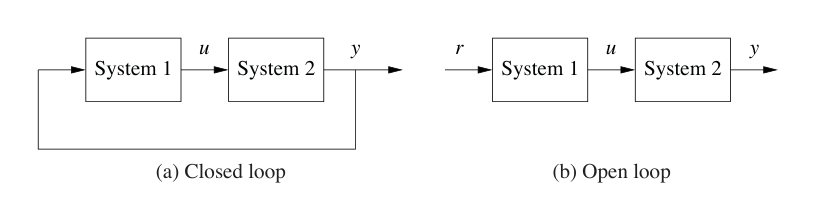
正如本章开头引文所示，生物学为反馈系统提供了大量例子。生物系统以极其丰富的方式使用反馈，尺度从分子到细胞，从有机体到生态系统。一个例子是人体通过胰腺产生胰岛素和胰高血糖素来调节血液中的葡萄糖。人体试图维持稳定的葡萄糖浓度，因为细胞需要用葡萄糖产生能量。当葡萄糖水平升高时，例如饭后，人体会释放胰岛素，促使多余葡萄糖储存在肝脏中。当葡萄糖水平偏低时，胰腺会分泌胰高血糖素，其作用与胰岛素相反。参照图 1.1，我们可以把肝脏看作系统 1，把胰腺看作系统 2。肝脏的输出是血液中的葡萄糖浓度，胰腺的输出是产生的胰岛素或胰高血糖素的量。一天之中，胰岛素与胰高血糖素分泌之间的相互作用有助于把血糖浓度保持在大约每 100 mL 血液 90 mg 的水平。
反馈系统的早期工程例子是离心调速器。在这种装置中，蒸汽机的轴连接到一个飞球机构，而飞球机构又连接到蒸汽机的节流阀，如图 1.2 所示。系统的设计方式是，当发动机转速升高时，比如由于负载减轻，飞球向外张开，连杆带动蒸汽机节流阀关闭。这样会使发动机减速，飞球也随之重新靠拢。我们可以把这个系统建模为闭环系统，其中系统 1 是蒸汽机，系统 2 是调速器。设计得当时，飞球调速器能够使发动机大体保持恒定速度，而且基本不受负载条件影响。离心调速器使瓦特蒸汽机得以成功应用，而瓦特蒸汽机又推动了工业革命。
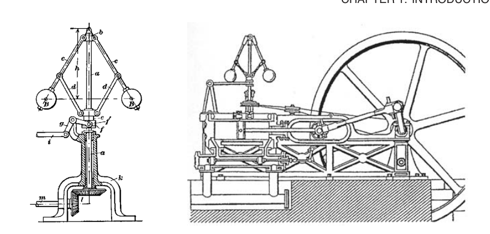
反馈有许多有趣的性质，可以在系统设计中加以利用。正如血糖调节和飞球调速器所显示的，反馈可以让系统更能抵抗外部影响。反馈还可以用非线性部件产生线性行为，这在电子学中是常见做法。更一般地说，反馈能让系统对外部扰动以及内部单个元件的变化都不敏感。
反馈也可能带来问题。它可能在系统中造成动态不稳定，引发振荡，甚至导致失控行为。另一个缺点在工程系统中尤其明显：反馈可能把不需要的传感器噪声引入系统，因此必须仔细滤波。正因如此，反馈系统研究中有相当一部分内容致力于理解动态行为，并掌握动态系统技术。
反馈系统在自然系统和工程系统中无处不在。控制系统维持建筑物和工厂中的环境、照明与供电，调节汽车、消费电子产品和制造过程的运行，支撑交通和通信系统，也是军事系统和空间系统中的关键组成部分。多数时候，它们隐藏在视线之外，埋在嵌入式微处理器的代码中，准确而可靠地执行任务。反馈也极大提高了原子力显微镜和望远镜等仪器的精度。
在自然界中，生物系统通过反馈实现稳态，维持热条件、化学条件和生物条件。尺度再放大，全球气候动态依赖大气、海洋、陆地和太阳之间的反馈相互作用。生态系统中，动植物生命之间的复杂相互作用也充满反馈的例子。甚至经济的动态过程，也建立在个人与公司通过市场、商品和服务交换形成的反馈之上。
1.2 什么是控制
控制这个术语有许多含义，不同社群的用法也常有差异。在本书中，我们把控制定义为在工程系统中使用算法与反馈。因此，控制包括电子放大器中的反馈回路、化工和材料加工中的设定值控制器、飞机上的电传飞行系统，以及控制互联网流量的路由协议等例子。正在兴起的应用包括高可信软件系统、自动驾驶车辆与机器人、实时资源管理系统，以及生物工程系统。从根本上说，控制是一门信息科学，它同时使用模拟表示和数字表示中的信息。
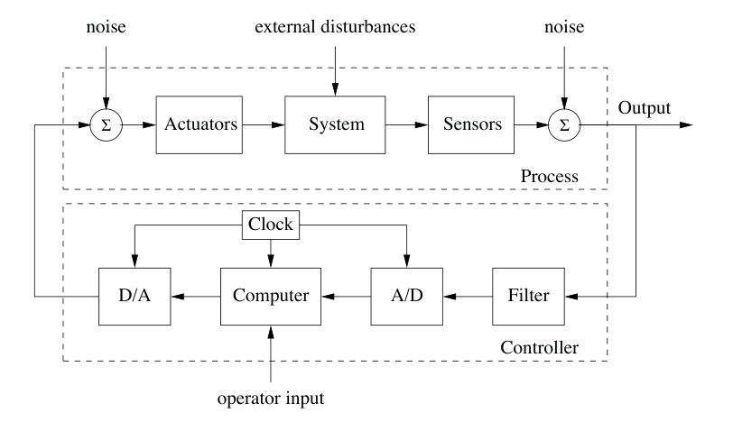
现代控制器会感知系统运行，把它与期望行为比较，根据系统对外部输入响应的模型计算校正动作，并通过执行器作用于系统，使系统发生期望的改变。这种由感知、计算、执行构成的基本反馈回路，是控制中的核心概念。设计控制逻辑时，关键问题是保证闭环系统动态稳定，也就是有界扰动产生有界误差，同时还要让闭环系统具有其他期望行为，例如良好的扰动衰减、对工作点变化的快速响应等。这些性质通过多种建模与分析技术来建立，这些技术捕捉系统的基本动态，并允许我们在存在不确定性、噪声和部件故障时探索可能出现的行为。
图 1.3 给出了一个典型控制系统的例子。感知、计算和执行这几个基本要素清晰可见。在现代控制系统中，计算通常由数字计算机实现，因此需要模数转换器和数模转换器。不确定性通过多种渠道进入系统，包括感知与执行子系统中的噪声，影响底层系统运行的外部扰动，以及系统中不确定的动态，例如参数误差、未建模效应等。根据传感器值计算控制动作的算法，常称为控制律。系统还可能受到操作员从外部输入的命令信号影响。
控制工程依赖并共享来自物理学、计算机科学和运筹学的工具。物理学提供动态与建模，计算机科学提供信息与软件，运筹学提供优化、概率论和博弈论。不过，控制在洞见和方法上也不同于这些学科。
控制与其他学科重合最明显的领域，或许是物理系统建模。这在工程与科学的各个领域都很常见。面向控制的建模与其他学科建模之间，一个根本差异在于对子系统之间相互作用的表示方式。控制依赖一种输入输出建模方式，这种方式能为系统行为提供许多新的洞见，例如扰动衰减与稳定互连。模型降阶，也就是从高保真模型推导出较简单、较低保真的动态描述，也很自然地可以在输入输出框架下描述。也许最重要的是，控制语境下的建模允许我们设计子系统之间的鲁棒互连，而这是所有大型工程系统运行中的关键特征。
控制也与计算机科学关系密切，因为几乎所有现代工程控制算法都用软件实现。不过，控制算法和软件可能与传统计算机软件很不一样，因为系统动态具有核心地位，而实现又往往具有实时性质。
1.3 反馈的例子
反馈具有许多有趣而有用的性质。它让我们能够用不精确的部件设计精确系统，也能让系统中的相关量按规定方式变化。不稳定系统可以用反馈来稳定，外部扰动的影响也可以削弱。反馈还通过利用感知、执行和计算，为设计者提供新的自由度。本节简要考察我们周围世界中反馈的一些重要应用与趋势。
早期技术例子
工程系统中控制的大规模普及，主要发生在 20 世纪后半叶。不过也有一些重要例外，例如前面介绍的离心调速器，以及 20 世纪之交设计出来用于调节建筑物温度的恒温器，见图 1.4a。
尤其是恒温器，它是人人熟悉的反馈控制简单例子。这个装置测量建筑物内的温度，将其与期望设定值比较，并利用二者之间的反馈误差来操作供热设备。例如，当温度过低时打开供热，当温度过高时关闭供热。这个说明抓住了反馈的本质，但即便对恒温器这样的基本装置来说，也稍显过于简单。由于供热设备和传感器中存在滞后与延迟，好的恒温器会做一点预测，在误差真正变号前就关闭加热器。这样可以避免温度过度摆动，也避免供热设备频繁启停。过程动态与控制器运行之间的这种相互作用，是现代控制系统设计中的关键因素。
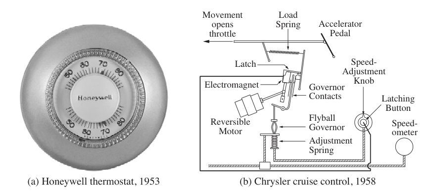
多年来，还出现了许多复杂程度不断提高的控制系统例子。一个较早进入公众视野的系统，是 1958 年汽车上引入的巡航控制选项，见图 1.4b。巡航控制生动展示了闭环反馈系统的动态行为：车辆上坡时速度下降产生误差，控制器中的积分作用逐渐减小该误差，越过坡顶时出现小幅超调，等等。后来汽车上的控制系统，例如排放控制与燃油计量系统，大幅减少了污染物，也提高了燃油经济性。
发电与输电
获得电力是现代社会技术进步的主要推动力量之一。控制的许多早期发展，都由电力的产生和分配推动。对电力系统来说，控制至关重要，单个电站中就有许多控制回路。控制对于整个电力网络的运行同样重要，因为电能难以储存，所以必须让生产与消费相匹配。对于一个发电机和一个用电者组成的系统，电力管理是直接的调节问题；对于拥有许多发电机、并且发电与用电之间距离很远的高度分布式系统，问题就困难得多。电力需求会以不可预测的方式快速变化，把发电者和消费者组合成大型网络，可以让许多供电者共同承担负载，也能在许多用户之间平均消费波动。因此，人们建成了大型跨大陆和跨国电力系统，例如图 1.5 所示的系统。
大多数电力使用交流电分配，因为借助变压器可以在较小功率损耗下改变传输电压。交流发电机只有在与网络电压变化同步时，才能向网络供电。这意味着网络中所有发电机的转子都必须同步。要用局部的分散控制器和少量相互作用实现这一点，是一个具有挑战性的问题。当区域电网互联时，人们观察到相距遥远的地区之间会偶尔出现低频振荡 [134]。
安全性和可靠性是电力系统中的重大关切。树木倒在电线上、雷击或设备故障都可能带来扰动。复杂的控制系统会试图在大扰动出现时仍保持系统运行。控制动作可以包括降低电压，把网络分割成子网，或者切断线路和用电用户。这些安全系统是电力分配系统的基本组成部分，不过即使采取所有预防措施，大型电力系统仍偶尔会发生故障。因此，电力系统是一个很好的复杂分布式系统例子，其中控制在许多层级、以许多不同方式执行。
航空航天与交通运输
在航空航天中，控制自 20 世纪初以来就是一项关键技术能力。事实上，莱特兄弟的正确声名并不只是来自展示了有动力飞行，而是展示了受控的有动力飞行。他们早期的莱特飞行器装有可运动的控制面，包括垂直翼面和鸭翼，还使用可扭转机翼，使飞行员能够调节飞机飞行。其实，这架飞机本身并不稳定，因此必须由飞行员持续校正。这个早期受控飞行例子之后，是飞行控制技术不断改进的迷人成功史，最终形成今天现代商业与军用飞机中高性能、高可靠性的自动飞行控制系统，见图 1.6。
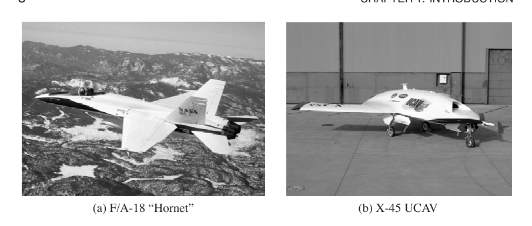
控制技术在许多其他应用领域也有类似的成功故事。二战早期的轰炸瞄准具和火控伺服系统，已经发展成今天高度精确的雷达制导火炮与精确制导武器。早期容易失败的空间任务，已经演进为常规发射任务、载人登月、长期载人空间站、在火星漫游的机器人车辆、在外行星轨道运行的探测器，以及大量服务于监视、通信、导航和地球观测需求的商业和军事卫星。汽车也已经从人工调校的机械和气动技术，发展到由计算机控制所有主要功能，包括燃油喷射、排放控制、巡航控制、制动和座舱舒适性。
目前，航空航天与交通运输系统中的研究正在探索把反馈应用到更高层级的决策中，包括运行模式、车辆构型、载荷构型和健康状态的逻辑调节。这些任务过去通常由人类操作员完成，但今天边界正在移动，控制系统越来越多地承担这些功能。另一个正在出现的显著趋势，是使用大量分布式实体。这些实体具有局部计算能力和全局通信连接，很少受到物理定律带来的规则性约束，也无法施加集中控制动作。这个趋势的例子包括国家空域管理问题、自动化高速公路和交通管理，以及未来战场中的指挥与控制。
材料与加工
化学工业推动了新材料发展中的显著进步，而这些新材料对现代社会至关重要。除了持续改善产品质量之外，过程控制行业还有其他因素推动控制的使用。环境法规不断对污染物排放提出更严格限制，迫使人们使用复杂的污染控制设备。环境安全考虑使人们设计更小的储存容量，以降低重大化学泄漏的风险，这要求对上游过程，有时也包括供应链，进行更严格的控制。能源成本的大幅上升也促使工程师设计高度集成的工厂，把许多过去独立运行的过程耦合起来。所有这些趋势都提高了过程复杂性和控制系统的性能要求，使控制系统设计越来越具有挑战性。图 1.7 展示了一些材料加工技术的例子。
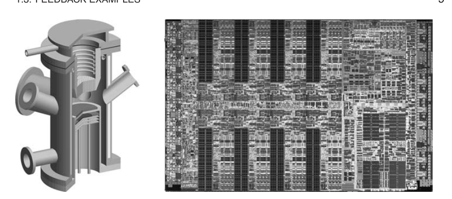
和许多其他应用领域一样，新的传感器技术正在为控制创造新的机会。在线传感器，包括激光后向散射、视频显微技术、紫外光谱、红外光谱和拉曼光谱，正在变得更可靠、更便宜，并出现在更多制造过程中。许多这类传感器已经被当前过程控制系统使用，不过要更有效地利用这些传感器提供的实时信息，还需要更复杂的信号处理与控制技术。控制工程师也参与设计更好的传感器，例如微电子工业仍然需要这样的传感器。和其他领域一样，挑战在于如何有效使用这些新传感器提供的大量数据。此外，还需要一种面向控制的方式来建模底层过程中的基本物理，以理解通过传感器数据观测内部状态的根本限制。
仪器
物理变量的测量是科学与工程中的首要兴趣之一。以加速度计为例，早期仪器由悬挂在弹簧上的质量块和位移传感器组成。这类仪器的精度高度依赖弹簧与传感器的准确标定。这里还存在设计折中，因为较弱的弹簧灵敏度高，但带宽低。
测量加速度的另一种方法是使用力反馈。弹簧被音圈取代，控制器控制音圈，使质量块保持在恒定位置。加速度与通过音圈的电流成正比。在这种仪器中，精度完全取决于音圈的标定，而不依赖传感器；传感器只作为反馈信号使用。灵敏度与带宽之间的折中也由此避免。这种使用反馈的方式已经应用到许多不同工程领域，并产生了性能显著提升的仪器。力反馈也用于手动控制中的触觉设备。
反馈的另一个重要应用，是生物系统的仪器测量。人们广泛使用一种称为电压钳的装置，通过反馈测量细胞中的离子电流，如图 1.8 所示。霍奇金和赫胥黎使用电压钳研究枪乌贼巨轴突中动作电位的传播。1963 年，他们与 Eccles 共同获得诺贝尔生理学或医学奖，获奖理由是发现了神经细胞膜外周和中枢部分中兴奋与抑制所涉及的离子机制。电压钳的一种改进形式称为膜片钳，它使人们能够精确测量单个离子通道何时打开或关闭。Neher 和 Sakmann 发展了这项技术，并因发现细胞中单个离子通道的功能获得 1991 年诺贝尔生理学或医学奖。
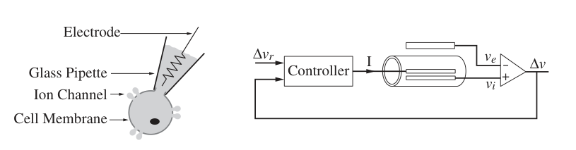
反馈在科学仪器中还有许多有趣而有用的应用。质谱仪的发展就是一个早期例子。在 1935 年的一篇论文中，Nier 观察到离子偏转同时取决于磁场和电场 [158]。他没有让两个场都保持恒定，而是让磁场波动，同时控制电场，使两个场之间的比值保持恒定。反馈通过真空管放大器实现。这个方案对于质谱学的发展至关重要。
荷兰工程师 van der Meer 发明了一种巧妙方法，用反馈在粒子加速器中维持高质量、高密度的粒子束 [153]。基本思想是在加速器某一点感知粒子位移，并在另一点施加校正信号。这种方案称为随机冷却，获得了 1984 年诺贝尔物理学奖。该方法对于 CERN 的成功实验是必要条件，在那些实验中，人们首次证明了与弱相互作用相关的 W 和 Z 粒子的存在。
1986 年诺贝尔物理学奖授予 宾尼希和罗雷尔，以表彰他们设计扫描隧道显微镜，这也是反馈创新使用的另一个例子。关键思想是让悬臂梁上的细尖端扫过表面，并记录尖端受到的力 [34]。尖端位移通过隧穿测量。反馈系统利用隧穿电流控制悬臂梁基座的位置，使隧穿电流保持恒定，这是力反馈的一个例子。其精度如此之高，以至于可以记录单个原子。通过水平移动悬臂梁基座，可以得到原子分布图。控制系统的性能会直接反映在图像质量和扫描速度上。第 3 章会更详细地介绍这个例子。
机器人与智能机器
控制论工程的目标，早在 20 世纪 40 年代甚至更早以前就已提出，那就是实现能够对变化环境表现出高度灵活或智能响应的系统。1948 年，麻省理工学院数学家诺伯特·维纳发表了一部广为阅读的控制论著作 [200]。1954 年，钱学森围绕导弹控制相关问题，对工程控制论的若干要素给出了更数学化的处理 [195]。这些著作以及同一时期的其他工作，共同构成了现代机器人与控制研究的大部分思想基础。
图 1.9 所示的火星探测漫游者和索尼 AIBO 娱乐机器人，是展示该领域成功的两个成果。喷气推进实验室 JPL 发射的两辆火星探测漫游者从 2004 年 1 月开始在火星表面机动运行了四年多，并传回所处环境的图像和测量结果。索尼 AIBO 机器人于 1999 年 6 月首次亮相，是第一批由大型国际公司面向大众市场推出的娱乐机器人之一。它尤其值得注意，因为它使用了人工智能技术，使其能够根据外部刺激和自身判断采取行动。这种更高层级的反馈是机器人技术中的关键元素，在机器人领域，避障、目标寻求、学习和自主性等问题十分常见。
尽管过去半个世纪机器人技术取得了巨大进步，从许多方面看，该领域仍处于早期阶段。与人类相比，今天的机器人仍然只表现出简单行为，它们的运动能力、复杂感知输入解释能力、高层推理能力和团队协作能力都有限。事实上，维纳关于机器人和智能机器的许多愿景仍未实现。要实现这一愿景，需要许多领域取得进展，包括感知、执行和能量储存。不过，将人工智能社群在规划、适应和学习方面的进展，与控制社群在反馈系统建模、分析和设计方面的技术结合起来，为进一步发展打开了一条新的道路。
网络与计算系统
网络控制是一个很大的研究领域，涵盖拥塞控制、路由、数据缓存和功率管理等许多主题。这些控制问题具有若干特征，使它们非常具有挑战性。最突出的特征是系统尺度极大；互联网可能是人类建造过的最大反馈控制系统。另一个特征是控制问题的分散性质：决策必须快速做出，而且只能基于局部信息。稳定性又会因变化的时间滞后而复杂化，因为关于网络状态的信息只能在延迟后被观测到或传送给控制器，一个局部控制动作的效果也只有在相当大的延迟之后才能传遍整个网络。网络中的不确定性和变化，例如网络拓扑、传输信道特性、流量需求和可用资源，可能持续且不可预测地变化。其他复杂因素包括多样的流量特征，既包括分组尺度也包括流尺度上的到达统计特征，以及网络必须支持的不同服务质量需求。
与网络控制相关的是网络中服务器的控制。计算机是路由器、Web 服务器和数据库服务器系统中的关键组成部分，这些系统用于通信、电子商务、广告和信息存储。尽管计算硬件成本大幅下降，这些系统的运行成本却上升了，因为管理和维护这些复杂互联系统很困难。这种情形类似于过程控制早期阶段，当时反馈首次被引入，用来控制工业过程。和过程控制一样，在计算系统中应用反馈，也存在提高性能和降低成本的有趣可能性。Hellerstein 等人的书 [97] 描述了反馈在计算机系统运行中的若干有前景用法。
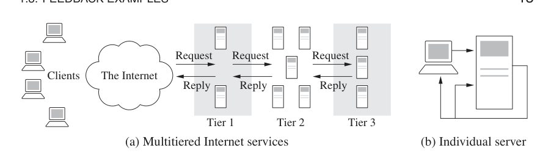
图 1.10a 展示了一个典型电子商务多层系统。系统具有若干服务器层。边缘服务器接收入站请求，并把请求路由到 HTTP 服务器层，HTTP 层解析请求并分发给应用服务器。不同请求所需的处理可能差异很大，应用服务器还可能访问由其他组织管理的外部服务器。
图 1.10b 示意了一层中单个服务器的控制。计算机中测量一个代表服务质量或运行成本的量，例如响应时间、吞吐量、服务速率或内存使用量。控制变量可能表示被接受的入站消息、操作系统中的优先级或内存分配。随后，反馈回路试图把服务质量变量维持在目标取值范围内。
经济学
经济是一个大型动态系统，包含许多行动者：政府、组织、公司和个人。政府通过法律和税收控制经济，中央银行通过设定利率控制经济，公司通过定价和投资影响经济。个人则通过购买、储蓄和投资影响经济。人们在宏观层面和微观层面都做过许多建模努力，但这种建模很困难，因为系统强烈受到各类行动者行为的影响。凯恩斯 [122] 发展了一个简单模型，用来理解国民生产总值、投资、消费和政府支出之间的关系。凯恩斯的一个观察是，在某些条件下，例如 20 世纪 30 年代大萧条期间，政府支出投资的增加可能带来国民生产总值更大幅度的增加。多个政府曾用这一思想试图缓解萧条。凯恩斯的思想可以由一个简单模型表达，习题 2.4 会讨论这个模型。
一些获得瑞典中央银行纪念阿尔弗雷德·诺贝尔经济学奖，通常称为诺贝尔经济学奖的经济学家的工作，为经济系统建模与控制提供了一个视角。保罗·A. 萨缪尔森于 1970 年获奖，理由是他发展了静态和动态经济理论，并积极推动经济科学分析水平的提高。劳伦斯·克莱因于 1980 年获奖，因为他发展了包含许多参数的大型动态模型，并将其拟合到历史数据 [126]，例如 1929 至 1952 年美国经济模型。其他研究者则建模了其他国家和其他时期。1997 年，迈伦·斯科尔斯与罗伯特·默顿因确定衍生品价值的新方法共同获奖。其中一个关键成分，是广泛用于银行和投资公司的股票价格变化动态模型。2004 年，芬恩·E. 基德兰德和爱德华·C. 普雷斯科特因对动态宏观经济学的贡献共同获得经济学奖，主题包括经济政策的时间一致性和商业周期背后的驱动力，这一主题显然与动态和控制有关。
经济系统难以建模的原因之一，是其中没有守恒定律。典型例子是，一家公司由股票表现出的价值可能快速且不规则地变化。不过，有一些领域存在守恒定律，因而允许准确建模。图 1.11 所示的产品从制造商流向零售商，就是这样的例子。产品是遵守守恒定律的物理量，系统可以通过核算不同库存中的产品数量来建模。控制供应链具有可观的经济收益，因为它可以在保证顾客能够买到产品的同时，尽量减少仓储中的产品。真实问题比图中所示更复杂，因为产品可能种类繁多，工厂可能分布在不同地理位置，而且工厂可能还需要原材料或子装配件。
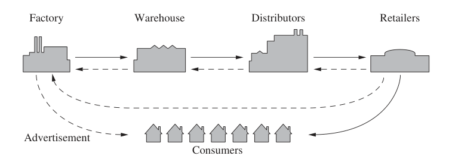
Forrester 于 1961 年提出供应链控制 [75]，如今这一方向越来越重要。利用模型最小化库存，可以获得可观经济收益。信息技术被用于预测销售、跟踪产品并实现准时化制造之后，这类方法的使用急剧加速。供应链管理对全球分销商日益增长的成功作出了重要贡献。
互联网广告是控制的一个新兴应用。通过网络广告，人们很容易快速测量不同营销策略的效果。随后可以建立顾客响应模型，并发展反馈策略。
自然界中的反馈
自然科学中的许多问题都涉及理解复杂大规模系统中的总体行为。这种行为来自大量较简单系统之间的相互作用，也来自复杂的信息流动模式。代表性例子可以在从胚胎学到地震学的许多领域中找到。专门研究特定复杂系统的研究者，往往会凭直觉重视反馈或互连在促进和稳定总体行为中的作用。
虽然各领域专家已经为分析不同复杂系统发展出复杂理论，但一种能够发现和利用共同特征与基本数学结构的严谨方法论才刚刚开始出现。科学和技术进步正在带来新的理解，使人们认识到底层动态以及反馈在大量自然与技术系统中的重要性。这里我们简要强调三个应用领域。
生物系统。当前生物学界感兴趣的一个重要主题，是对图 1.12 所示这类生物控制网络进行逆向工程，并最终进行正向工程。大量生物现象为控制提供了丰富例子，包括基因调控和信号转导，激素、免疫和心血管反馈机制，肌肉控制和运动，主动感知、视觉和本体感觉，注意与意识，以及种群动态和流行病。每一个例子，以及更多例子，都为我们提供机会去弄清什么东西有效、它如何工作，以及我们能如何影响它。
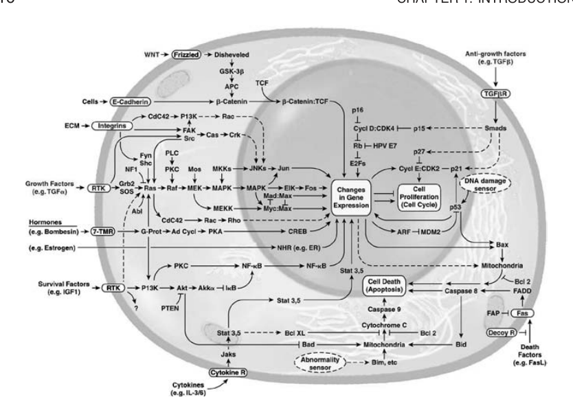
生物系统的一个有趣特征，是经常使用正反馈来塑造系统动态。正反馈可以通过基因的自调节产生类似开关的行为，也可以产生振荡，例如细胞周期、中央模式发生器或昼夜节律中的振荡。
生态系统。与单个细胞和有机体相比，群体与生态系统的涌现性质本质上反映了作用于多个层级的选择机制，而且主要作用尺度远低于整个系统尺度。由于生态系统是复杂的多尺度动态系统，它们为反馈系统建模与分析提供了广泛的新挑战。近来，把控制和动态系统工具应用于细菌网络的经验表明，这些网络的许多复杂性来自多层反馈回路的存在，而这些回路为单个细胞提供了鲁棒功能。但在其他情况下，细胞层级上的事件可能以牺牲个体为代价使群体受益。系统层级分析可以应用于生态系统，目标是理解这类系统的鲁棒性，并理解影响单个物种的决策和事件在多大程度上会贡献于整个生态系统的鲁棒性或脆弱性。
环境科学。现在已经无可争辩，人类活动已经在全球尺度上改变了环境。这个领域的研究者面对极其复杂的问题，其中首要问题是理解在全球尺度上运行的反馈系统。发展这种理解的挑战之一，是问题具有多尺度性质。要理解碳循环这样的全球现象，就必须把微生物等微尺度现象的动态细节也纳入理解之中。
1.4 反馈的性质
反馈是一个强有力的思想。正如我们已经看到的，它在自然系统和技术系统中被广泛使用。反馈原理很简单：根据期望性能与实际性能之间的差异采取校正动作。在工程中，反馈曾在许多不同背景下被反复重新发现并申请专利。反馈的使用经常带来系统能力的大幅提高，而这些提高有时是革命性的，如前文所述。原因在于反馈具有一些真正非凡的性质。本节讨论若干可以凭直觉理解的反馈性质。后续章节会把这些直觉形式化。
对不确定性的鲁棒性
反馈的一个关键用途，是使系统对不确定性具有鲁棒性。通过测量被调节信号的感知值与期望值之间的差异，我们可以施加校正动作。如果系统发生某种变化并影响被调节信号，我们就感知这一变化，并试图把系统拉回期望工作点。这正是瓦特在蒸汽机上使用离心调速器时利用的效果。
作为这个原理的例子，考虑图 1.13 所示的简单反馈系统。在这个系统中，通过调节流向发动机的燃油量来控制车辆速度。系统使用简单的比例积分反馈，使燃油量同时取决于当前速度与期望速度之间的误差，以及该误差的积分。右侧图给出了期望速度阶跃变化时的反馈结果，比较了不同车辆质量下的情况。这些质量差异可能来自乘客数量不同，或者拖挂了拖车。请注意，尽管质量变化达到 3 倍，车辆稳态速度总能接近期望速度，并在大约 5 秒内达到该速度。因此，系统性能对这种不确定性具有鲁棒性。
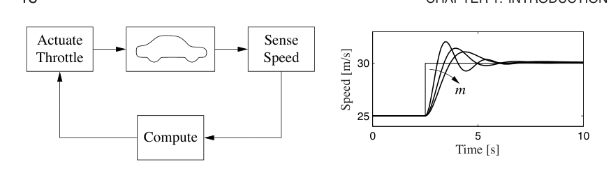
另一个早期利用反馈提供鲁棒性的例子，是负反馈放大器。电话通信发展时，人们使用放大器来补偿长线路中的信号衰减。真空管是可用于构建放大器的元件。管式放大器的非线性特性造成的失真，以及放大器漂移，曾长期阻碍线路放大器的发展。1927 年，贝尔电话实验室电气工程师 哈罗德·S. 布莱克发明反馈放大器，带来重大突破。布莱克使用负反馈，虽然降低了增益，却使放大器对真空管特性变化不敏感。这一发明使人们能够在真空管放大器存在非线性的情况下，构建具有线性特性的稳定放大器。
动态设计
反馈的另一个用途，是改变系统动态。通过反馈，我们可以改变系统行为，使其满足应用需求：不稳定的系统可以被稳定，迟缓的系统可以变得响应迅速，工作点漂移的系统可以保持恒定。控制理论提供了一组丰富技术，用来分析复杂系统的稳定性和动态响应，并通过分析描述各组成部分的线性与非线性算子的增益，给出这类系统行为的界限。
飞行控制领域提供了利用控制设计动态的一个例子。下面引文来自 Wilbur Wright 1901 年在 Western Society of Engineers 的演讲 [149]，说明了控制在飞机发展中的作用：
人们已经知道如何构造机翼或飞机，使其在空气中以足够速度前进时，不仅能承受机翼自身重量，也能承受发动机和工程师的重量。人们也知道如何制造足够轻且足够有力的发动机和螺旋桨，使这些翼面达到可维持飞行的速度……无法平衡和操纵，仍然是飞行问题的学生们面对的难题……一旦这个特征被解决，飞行时代就会到来，因为所有其他困难都只是次要问题。
莱特兄弟因此意识到，控制是实现飞行的关键问题。他们通过建造莱特飞行器，在稳定性与机动性之间作出折中。这架飞机不稳定，但机动性强。莱特飞行器的舵位于飞机前方，这使飞机非常灵活。其缺点是飞行员必须不断调整舵来驾驶飞机：如果飞行员松开操纵杆，飞机就会坠毁。其他早期飞行家试图制造稳定的飞机。这样的飞机本来会更容易驾驶，但由于机动性差，无法飞到空中。凭借洞见和巧妙实验，莱特兄弟于 1905 年在基蒂霍克完成了首次成功飞行。
由于驾驶不稳定飞机非常疲惫，人们强烈希望找到一种能够稳定飞机的机制。Sperry 发明了这样一种装置，它基于反馈概念。Sperry 使用陀螺稳定摆来提供垂直方向指示。然后他安排了一个反馈机制：如果飞机指向下方，就拉动操纵杆使飞机抬头，反之亦然。Sperry 自动驾驶仪是航空工程中首次使用反馈。1914 年，Sperry 在巴黎的一场最安全飞机竞赛中获奖。图 1.14 显示了 Curtiss 水上飞机和 Sperry 自动驾驶仪。这个自动驾驶仪很好地展示了反馈如何被用来稳定不稳定系统，从而设计飞机动态。
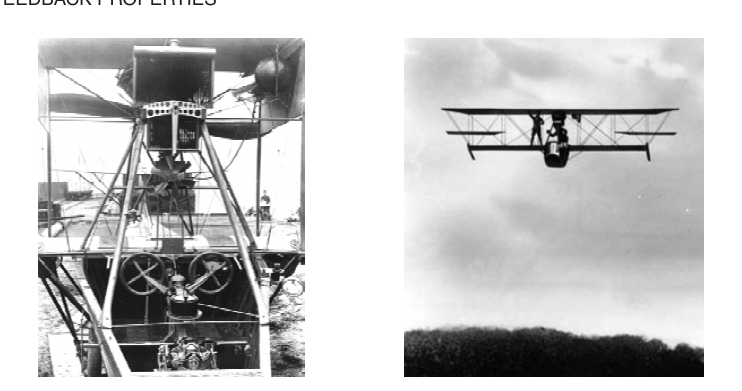
设计装置动态还有一个优点，它能提高总体系统设计的模块化程度。通过反馈创建一个响应符合期望轮廓的系统，我们可以隐藏子系统内部可能存在的复杂性和变化性。这样一来，构建更复杂系统时，就不必同时调节大量相互作用部件的响应。这也是布莱克在真空管放大器中使用负反馈的优点之一：所得装置具有定义明确的线性输入输出响应，不依赖所用真空管的个别特性。
更高层级的自动化
反馈使用中的一个重要趋势，是把它应用到更高层级的情境感知与决策中。这不仅包括基于系统状态的传统逻辑分支，也包括优化、适应、学习，甚至更高层级的抽象推理。这些问题属于人工智能社群的领域，而在许多应用中，动态、鲁棒性和互连正在扮演越来越重要的角色。
更高层级决策中的一个有趣研究领域，是汽车自主控制。Ernst Dickmanns 进行了早期自动驾驶实验，他在 20 世纪 80 年代为汽车配备摄像头和其他传感器 [60]。1994 年，他的团队在巴黎附近的高速公路上演示了有人监督下的自动驾驶；1995 年，他的一辆汽车在有人监督下从慕尼黑自动驾驶到哥本哈根，速度最高达到 175 km/h。这辆车能够超越其他车辆，并自动变道。
近年来，美国国防高级研究计划局 DARPA 通过大挑战系列竞赛探索了这一应用领域。该竞赛由美国政府资助，目标是建造能够在沙漠和城市环境中自动驾驶的车辆。加州理工学院使用一辆改装的 Ford E-350 越野厢式车参加了 2005 年和 2007 年大挑战，这辆车昵称为 Alice。它完全自动化，包括电子控制的转向、节流阀、制动器、变速器和点火系统。它的传感系统包括多台以 10 至 30 Hz 扫描的视频摄像头、若干以 10 Hz 扫描的激光测距单元，以及一个能够以 5 ms 时间分辨率提供位置和姿态估计的惯性导航组件。计算资源包括 12 台高速服务器，通过 1 Gb/s 以太网交换机连接。图 1.15 展示了这辆车及其控制架构框图。
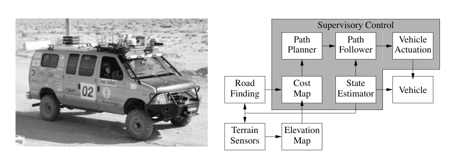
所开发的软件和硬件基础设施，使车辆能够以相当高的速度穿越长距离。在测试中，Alice 在加利福尼亚的莫哈韦沙漠中自动行驶超过 500 km，能够沿土路和小径行驶，如果路径上存在这些道路，并能避开沿途障碍。完全自主模式下，速度超过 50 km/h。沙漠测试期间，研究者对算法做了大量调试，部分原因在于缺少适合这种复杂层级系统的系统级设计工具。比赛中的其他参赛者，包括赢得 2005 年竞赛的斯坦福团队，使用了自适应控制和学习算法，提高了系统在未知环境中的能力。大挑战的参赛者共同展示了下一代控制系统的部分能力，也凸显了更高层级决策控制中的许多研究方向。
反馈的缺点
反馈有许多优点，但也有一些缺点。其中最主要的是，如果系统设计不当，可能会不稳定。我们都熟悉房间里麦克风放大倍数调得太高时出现的正反馈效果。这是反馈不稳定的一个例子，显然是我们希望避免的。难点在于，我们不仅要让系统在标称条件下稳定，还要让它在所有可能的动态扰动下仍保持稳定。
除了可能不稳定之外，反馈还会内在地耦合系统的不同部分。一个常见问题是，反馈常常把测量噪声注入系统。测量信号必须仔细滤波，使执行器和过程动态不对噪声作出响应；与此同时，还必须保证来自传感器的测量信号恰当地耦合到闭环动态中，从而达到所需性能水平。
控制的另一个潜在缺点，是把控制系统嵌入产品会增加复杂性。过去几十年中，感知、计算和执行的成本大幅下降，但控制系统仍常常很复杂，因此必须仔细权衡成本与收益。一个早期工程例子是汽车中基于微处理器的反馈系统。微处理器在汽车应用中的使用始于 20 世纪 70 年代初，主要由日益严格的排放标准推动，因为这些标准只有通过电子控制才能满足。早期系统价格昂贵，故障率也高于期望，经常导致顾客不满。只有通过技术的积极改进，这些系统的性能、可靠性和成本才使它们能够以对用户透明的方式使用。即使在今天，这些系统仍然复杂到使普通车主很难自己修理问题。
前馈
反馈具有反应性：必须先出现误差，才会采取校正动作。不过在某些情况下，我们可以在扰动进入系统之前测量它，并利用这一信息在扰动影响系统之前采取校正动作。于是，扰动效果通过测量扰动并产生抵消它的控制信号而减小。这种控制系统的方式称为前馈。前馈在塑造对命令信号的响应时尤其有用，因为命令信号总是可获得的。由于前馈试图匹配两个信号，它要求有良好的过程模型；否则校正量大小可能错误，时机也可能不对。
反馈和前馈的思想非常一般，出现在许多不同领域。在经济学中，反馈与前馈类似于市场经济与计划经济的区别。在商业中，前馈策略相当于基于广泛战略规划经营公司，而反馈策略则相当于一种反应式做法。在生物学中，人们提出前馈是人体运动控制的基本组成部分，并会在训练中被调校。经验表明，将反馈和前馈结合起来常常有利，而正确的平衡需要洞察力，也需要理解二者各自的性质。
正反馈
在本书大部分内容中，我们会考虑负反馈的作用，也就是通过对扰动作出反应并减小扰动影响来调节系统。在某些系统中，尤其是生物系统中，正反馈可以发挥重要作用。在具有正反馈的系统中，某个变量或信号的增加会造成一种情形，使该量通过自身动态进一步增加。这会产生去稳定作用，通常还会伴随某种饱和机制来限制该量的增长。虽然这种行为常被视为不理想，但生物系统和工程系统会利用它来对某种条件或信号获得非常快速的响应。
正反馈的一个用途是产生开关行为，即系统保持某个给定状态，直到某个输入越过阈值。这里常常会存在迟滞，使阈值附近的噪声输入不会导致系统抖动。这类行为称为双稳态，常与存储器件有关。
1.5 简单的反馈形式
反馈的思想是根据某个量的期望值与实际值之间的差异采取校正动作，这个思想可以用许多方式实现。很简单的反馈律也能带来反馈的好处，例如开关控制、比例控制，以及比例积分微分控制。本节简要预览后文会更形式化研究的一些主题。
开关控制
一个简单反馈机制可以描述为
其中控制误差 \(e = r - y\) 是参考信号或命令信号 \(r\) 与系统输出 \(y\) 之间的差，而 \(u\) 是执行命令。图 1.16a 显示了误差与控制之间的关系。这个控制律意味着系统总是使用最大校正动作。
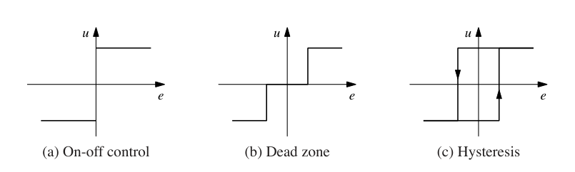
式 (1.1) 中的反馈称为开关控制。它的主要优点之一是简单，没有参数需要选择。开关控制常能成功地把过程变量维持在参考值附近，例如用简单恒温器维持房间温度。它通常会导致受控变量产生振荡，只要振荡足够小，这往往可以接受。
注意，在式 (1.1) 中，当误差为零时，控制变量没有定义。常见修改方式是引入死区或迟滞，见图 1.16b 与图 1.16c。
PID 控制
开关控制常引起振荡的原因，是系统反应过度：误差发生很小变化，就会使执行变量在整个范围内切换。比例控制可以避免这种效果，在比例控制中，控制器特性在小误差范围内与控制误差成正比。可通过以下控制律实现：
其中 \(k_p\) 是控制器增益，\(e_{\min} = u_{\min}/k_p\)，\(e_{\max} = u_{\max}/k_p\)。区间 \((e_{\min}, e_{\max})\) 称为比例带，因为当误差位于该区间内时，控制器行为是线性的：
与开关控制相比，比例控制已有很大改进，但它的缺点是过程变量常常会偏离参考值。特别是，如果系统需要某个控制信号水平才能维持期望值，那么为了产生所需输入，就必须有 \(e \ne 0\)。
通过使控制动作与误差积分成正比，可以避免这一点：
这种控制形式称为积分控制，\(k_i\) 是积分增益。通过简单论证可以证明，具有积分作用的控制器稳态误差为零，见习题 1.5。需要注意的是，并非总会存在稳态，因为系统可能一直在振荡。
进一步的改进是使用误差预测，使控制器具有一定预见能力。一个简单预测可由线性外推给出：
它预测 \(T_d\) 个时间单位之后的误差。把比例、积分和微分控制结合起来，可以得到数学表达式如下的控制器：
因此，控制动作是三项之和：过去由误差积分表示，现在由比例项表示，未来由误差的线性外推表示，即微分项。这种反馈形式称为比例积分微分控制器，也就是 PID 控制器，其作用如图 1.17 所示。
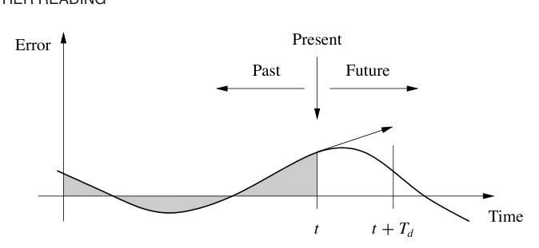
PID 控制器非常有用，能够解决范围很广的控制问题。超过 95% 的工业控制问题由 PID 控制解决，尽管其中许多控制器实际上是比例积分控制器，也就是 PI 控制器，因为微分作用常常没有包括在内 [58]。此外还有更高级的控制器，它们与 PID 控制器的不同之处在于使用更复杂的预测方法。
1.6 延伸阅读
本章材料大量借鉴了控制、动态与系统未来方向专家组的报告 [155]。另有若干论文和报告强调了控制的成功 [159] 以及控制中的新视野 [45, 130, 204]。控制的早期发展由 Mayr [148] 介绍，也见 Bennett 的两本书 [28, 29]，它们覆盖 1800 至 1955 年这一时期。Mindell [152] 写过一部引人入胜的著作，考察了美国控制早期历史中的若干方面。Kelly 的通俗著作《失控》[121] 则跨越广泛学科介绍了许多控制概念。许多教材在特定学科背景下介绍控制系统。面向工程师的教材中，Franklin、Powell 和 Emami-Naeini [79]，Dorf 和 Bishop [61]，Kuo 和 Golnaraghi [133]，以及 Seborg、Edgar 和 Mellichamp [178] 的书被广泛使用。控制理论更偏数学的处理包括 Sontag [182] 与 Lewis [136]。Hellerstein 等人的书 [97] 描述了反馈控制在计算系统中的使用。还有许多书考察动态与反馈在生物系统中的作用，包括 Milhorn [151]，现已绝版，J. D. Murray [154]，以及 Ellner 和 Guckenheimer [70]。Fradkov 的书 [77] 和 Bechhoefer 的教程文章 [25] 涵盖了物理学社群感兴趣的许多具体主题。
习题
1.1 眼动。做下面的实验并解释结果：保持头部不动，把一只手放在脸前左右移动，并用眼睛跟随它。记录在开始无法跟上之前，你的手能移动多快。然后保持手不动，左右摇头，再记录在无法跟上之前，你能移动多快。
1.2 找出你在日常环境中遇到的五个反馈系统。对每个系统，指出其感知机制、执行机制和控制律。描述反馈系统针对哪些不确定性提供了鲁棒性，或者描述反馈的使用改变了哪些动态。
1.3 平衡系统。闭上眼睛单脚站立 15 秒。以图 1.3 为参照，描述负责让你不摔倒的控制系统。注意，这里的控制器会不同于图中的控制器，除非你是很遥远未来正在读这本书的仿生人。
1.4 巡航控制。从配套网站下载用于生成图 1.13 中巡航控制系统仿真的 MATLAB 代码。通过试错改变控制律参数，使质量 \(m = 1000\) kg 的车辆速度超调不超过 1 m/s。
1.5 积分作用。如果一个具有常值输入的系统，其输出随时间增加而接近某个常数值，我们就说该系统达到稳态。证明如果闭环系统达到稳态，则具有积分作用的控制器，例如式 (1.4) 和式 (1.5) 中给出的控制器，会产生零误差。
1.6 在网上搜索并选择一篇大众媒体中关于反馈与控制系统的文章。使用文章中的术语描述该反馈系统。特别是，指出控制系统，并描述 a 被控制的底层过程或系统，b 传感器，c 执行器，以及 d 计算元件。如果文章中没有提供某些信息，请说明这一点，并猜测可能使用了什么。